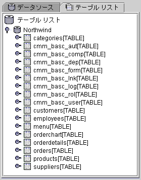
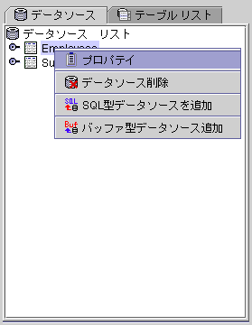
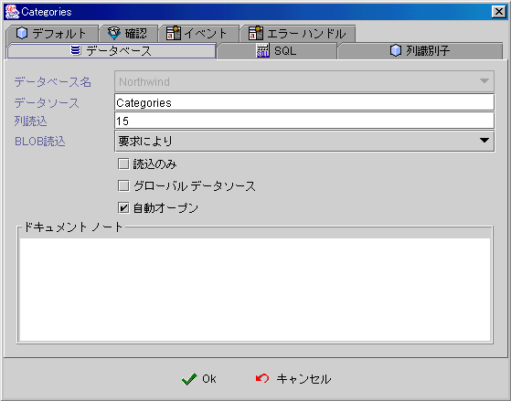
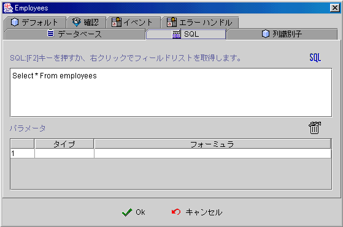
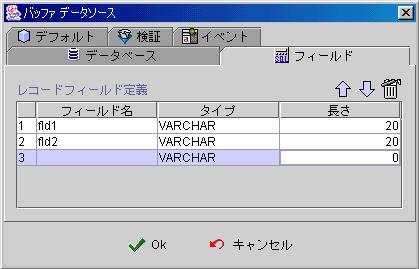
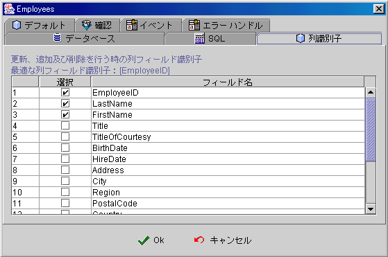
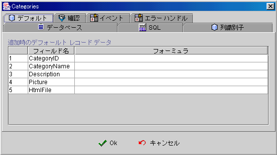
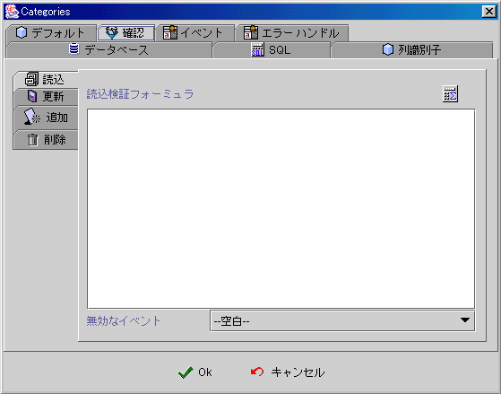
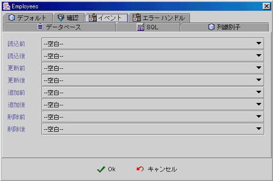
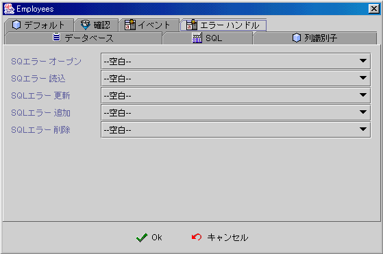

|

9.
データソース(data source)
データソースデザイン手順
(data source design procedures)
データソースタイプ
(data source type)
データベースのテーブルリスト
(database tables listing)
データソースリスト (data source listing)
グローバルデータソース
(globe data source)
データベースプロパティ (database properties)
SQLプロパティ (SQL properties)
データフィールドプロパティ (field
properties)
row id プロパティ (row id properties)
デフォルトプロパティ (default properties)
プロパティ認証 (validation properties)
イベント (event)
ErrHandle (SQL error handle)
データソース読み取、追加、保存、削除システム内部プロシージャ
(fetch, insert, post, delete system internal procedures)
データソースデザイン手順
(data source design procedures)
-
データソーステーブル
(table
data source)の選択、 SQL資料來源 (SQL data source)或いは Bufferデータソース (buffer
data source)については、 データソースのタイプ
(data source type)を参照。
-
設定データソースと
jLIVE™ middle wareの設定は、 行の読み取り (row fetch)
を参照。
-
大型資料の設定
は(Blob and Clob) フィールドの読み取り方式を参照。
-
ユーザ編集の可否か
(updateable)。
SQLデータソース (SQL data source)
の関連結果は読みオンリーかどうか (read only)。
-
データソースは他のフォームと共用かどうかは、グローバルデータソース
(globe data source)を参照。
-
フォームがオープンした後データソースが即時にオープンかどうかのオートオープン
(auto open)。
-
データテーブルテスト編集、SQLデータソースのSQLコマンド，或いはBufferデータソースのフィールド構造定義 (field structure)。
-
編集可能のデータソースにおいては，データ行ID
フィールドの選択を参照。
-
フォーミュラ
(formula)でデータソースを新規追加する時には，フィールドデフォルトを参照。
-
データソースに対する読み取
(fetch) 追加 (insert) 保存 (post) 削除 (delete) は、作業の正確さチェックを参照。
-
読み取、更新、追加、削除は、前後イベント
(event) を参照。
-
データベースサーバー
(database server)は SQL エラーが生じた時，アプリリカバリのプログラミングを参照。
▲Top
データソースタイプ
(data source type)
-
テーブルデータソース
(Table data source)：一つのテーブルにおいてセレクト－(select)
を実行して得られた SQLコマンドの結果集
(result set)。
-
SQLデータソース
(SQL data source)：多数のテーブルにおいてセレクト－ (select)
を実行して得られた SQLコマンドの結果集
(result set)。
-
Bufferデータソース
(Buffer data source)：Bufferデータソースの初期
(initial) と操作 (operation) はクライアント側 (client)に限ります。
| |
テーブルデータソース |
SQLデータソース |
Bufferデータソース |
| オプション |
テーブルリストから選択 |
データソースリストから追加 |
データソースリストから追加 |
| SQL |
一つのテーブルにおいてセレクト－(select)
を実行して得られた SQLコマンドの結果集
(result set) |
多数のテーブルにおいてセレクト－(table
join) を実行して得られた SQLコマンドの結果集
(result set)。 |
データフィールド構造 (field
structure) |
| 保存読取 |
更新可能(updateable) |
読取のみ (read only) |
更新可能(updateable) |
| ソース |
データベーステーブル (tables) |
データベーステーブル (tables) |
クライアント即時データ |
| 文字ロード |
| 其他のデータソースロード |
| 検索 |
パラメーター (parameters)で SQL
コマンド実行 |
指定パラメーター (parameters)で SQLコマンドの実行 |
リロードでデータ選択 |
| 適用 |
データベーステーブル (tables)
メンテナンス |
データテーブルの関連統計 |
ユーザデータ一時保存 |
| 文字ロード |
| バッチ (batch)
作業のデータ処理 |
▲Top
データベースのテーブルリスト
(database tables listing)
デザインナーはアプリに設定されたデータベース(database)がツリーの形でテーブル(tables)をリスト
し，ダブルクリックするか右キーでクリックすると，このテーブルをデータソースとして作成できます。

▲Top
データソースリスト
(data source listing)
データソース
(data source listing) リストはこのフォーム中に表示されます。デザインナーはマウス右キーで追加
(add)、編集 (edit properties)、削除 (remove)
データソースすることができます。システムはデータフィールド名及びプロパティ資料を表示できます：タイプ
(type)、精度 (precision)、スケール (scale)、読取のみ (read
only)、検索可能 (searchable)、大文字小さい文字区別 (case
sensitive)、自動累積増加 (auto
increase)、書き込み可能 (writable)、デフォルト書き込み可能 (default writable)などを表示します。

▲Top
グローバルデータソース(globe data source)
jLIVE
Builder™
はデータソースをグローバルに設定し，多数のフォーム(form)
を一つのデータソースにアクセスすることが出来ます。多数フォームの場合，並列性 (synchronized)
で即時アクセス状態をされます。
グローバルデータソースは一般データソースと区別し，データソース名は多数のフォームデータソースの設定中に同じ名前で，しかも，グローバルプロパティを選択すると，このデータソースがグローバルデータソースになります。最初オープンされたフォームでデータソースがオープンされ，その後のフォームで共用されます。このフォーム閉じる時に
(form close)，共用されているデータソースが必ずしも閉じる (close data
source)のではなく，最後に閉じたフォームによってデータソースが閉じられます
(close data source)。
▲Top
データベースプロパティ (database properties)
-
データベース名 (database name)：
データソースのデータベース名。
-
データソース (data source name)： データソース名。同じフォーム中にフォーム名は修正できますが，２重できません。
-
行フェッチ－
(row fetch)： データソースとデータベースサーバの連結でデータレコードを読み取る時の行数。デフォルトは
15 列，0 デフォルト表示，-1 すべての行回答 (all rows)。データ量が少ない時と関連データソース
(lookup data source)の時，-1に設定され (すべての行回答)，効率をアップできます。
-
Blob 読取 (Blob fetch)：大型データ
(Blob and Clob) フィールドの対処方式，データソースオープン (open)の時，大型データ
(Blob and Clob) フィールドはどんな方式でデータ転送。
-
読取のみ (read only)：
データソースを読み取りのみに設定。
-
グローバルデータソース (globe data source)：
グローバルデータソース。グローバルデータソース (globe data source)参考。
-
オートオープン (auto open)：
フォームオープンした後，データソースが自動的にオープン。

▲Top
SQL
プロパティ (SQL properties)
-
SQL
F2キーか右クリック，データフィールドで表示 ： SQLコマンドを入力し， F2
キーを押すと，SQL データフィールドフォームが表示され，それを活用すれば効率アップと正確性アップに繋がります。
-
SQL
コマンドテスト(SQL
test) ： SQL
コマンドが変更されると，強制的にテストを実行しなければなりません。
-
パラメーター (parameters)： SQL
コマンドに ? 記号でパラメーターを導入でき，フォーミュラで値を与えます。

▲Top
フィールドプロパティ
(field
properties)
Buffer
データソースフィールドのスタイル

▲Top
行ＩＤプロパティ
(row Id properties)
プロパティが編集可能のデータソースの場合，もしデータドライブ
(database driver)が結果集の直接更新、新規、削除 (result set position update, insert, delete)
をサポートしない場合，デザインナーは必ず ID フィールド (row id fields)を適当に選択しなければなりません，jLIVE™
middle ware はそれによって更新 (update)、新規 (insert)、削除
(delete) の SQLコマンドを組みます。データベース連結テストでドライブ(driver)が更新、新規、削除などの情報が表示されます。

▲Top
デフォルトプロパティ
(default properties)

▲Top
プロパティ認証(validate properties)
-
フェッチ－
(fetch)：
フォーミュラがＴＲＵＥの時，読取は可能。
-
編集 (update)：
フォーミュラがＴＲＵＥの時，編集保存は可能。
-
新規 (insert)：
フォーミュラがＴＲＵＥの時，新規追加は可能。
-
削除 (delete)：
フォーミュラがＴＲＵＥの時，削除は可能。
-
無効イベント (invalidate event)：
フォーミュラがＦＡＬＳＥの時，イベントを起動。

▲Top
イベント
(events)
データソースはデータベースにアクセスする時にイベントを起動します。
-
フェッチー前 (before fetch)：
-
フェッチー後 (after fetch)：
-
更新前 (before update)：
-
更新後 (after update)：
-
新規追加前 (before insert)：
-
新規追加後 (after insert)：
-
削除前 (before delete)：
-
削除後 (after delete)：

▲Top
ErrHandle (SQL error handle)
-
SQL オープンエラー (open)：データソースオープン
(open)、読取レコード (data source record meta-data)、クエリーデータソースイベント
(query data source)
，SQLエラー (exception) の時にイベントを起動。
-
SQL
読取エラー (fetch)：データソースのレコードを読取する時に
，SQL エラー (exception) の時にイベントを起動。
-
SQL 編集エラー (update)：データソースのレコードを編集する時に
，SQL エラー (exception) の時にイベントを起動。
-
SQL 新規追加エラー (insert)：データソースのレコードを新規追加する時に
，SQL エラー (exception) の時にイベントを起動。
-
SQL 削除エラー (delete)：データソースのレコードを削除する時に
，SQL エラー (exception) の時にイベントを起動。

▲Top
データソース読取、新規、保存、削除システム内部のプロシージャ
(fetch, insert, post, delete system internal procedures)
▲Top
Copyright © 2001~
2004 Probe Technology Inc. . All Rights Reserved.
Questions, comments,
and suggestions to Service@probe.com.tw
|